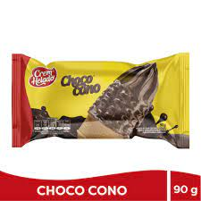
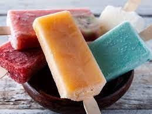
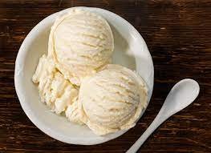
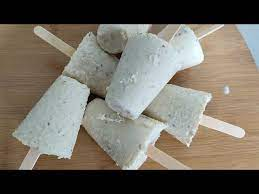
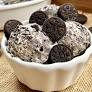
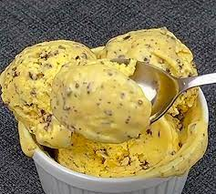
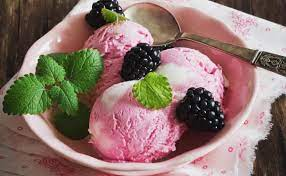
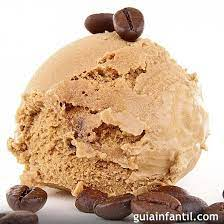
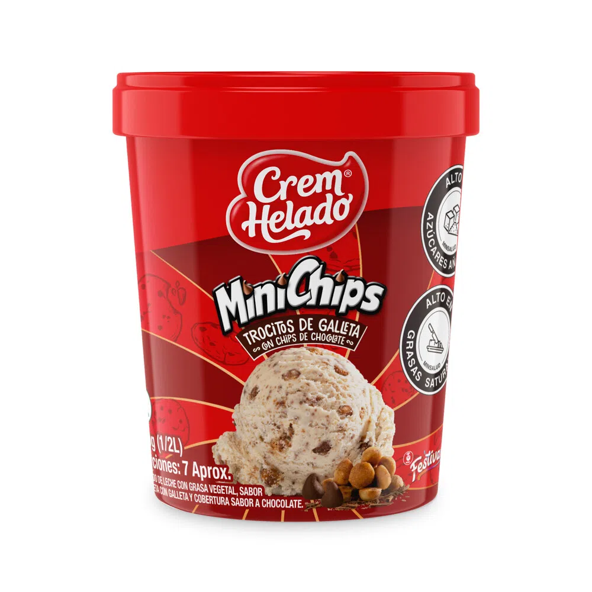

| CHOCOCONO Helado de leche con grasa vegetal, sabor a vainilla con cubierta sabor a Chocolate.  precio:2500 | PALETAS helado hecho a base de agua, colorante, saborizante y azúcar, de forma alargada y con un palo que lo atraviesa para tomarlo.  precio:1500 | HELADO DE VAINILLA El helado de vainilla es un tipo de helado con sabor a vainilla que puede ser natural o artificial. Al igual que otros sabores de helado,  precio:1.000 |
| HELADO DE COCO Si cualquier tarde de verano te apetece comer un helado cremoso y nutritivo, este helado de coco va a ser uno de tus caprichos más dulces.  precio: 1.000 | HELADO DE OREO Ingredientes: Harina de trigo enriquecida (harina de trigo, vitamina B3, zinc, hierro, vitamina B1, vitamina B2 y ácido fólico), azúcar, grasa vegetal, aceite vegetal, cocoa, jarabe de maíz de alta fructosa, sal yodada, bicarbonato de sodio, lecitina de soya y saborizante artificial.  precio: 1.000 | MARACUYA la leche, el agua, diferentes tipos de azúcares, grasa, estabilizantes, emulsionantes y aromas.  precio: 3.000 |
| HELADO CASERO producto refrescante, cremoso e ideal para consumirlo durante el verano.  precio: 500 | HELADO DE CAFE Postre congelado hecho de agua, leche, nata, o natillas combinadas con saborizantes, endulzantes, y azúcar  precio:1.000 | HELADO DE MINI CHIPS del producto. Disfruta del irresistible sabor del helado Crem Helado Minichips y comparte momentos inolvidables con familia y amigos.  precio: 1.000 |